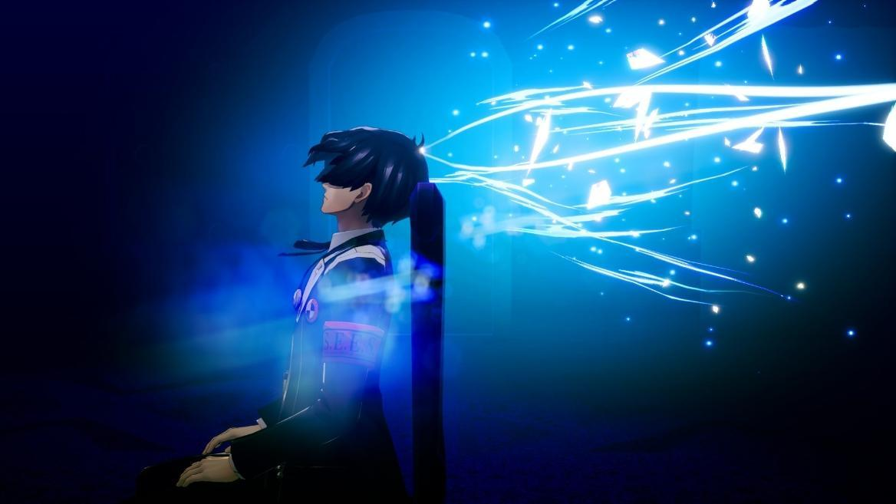
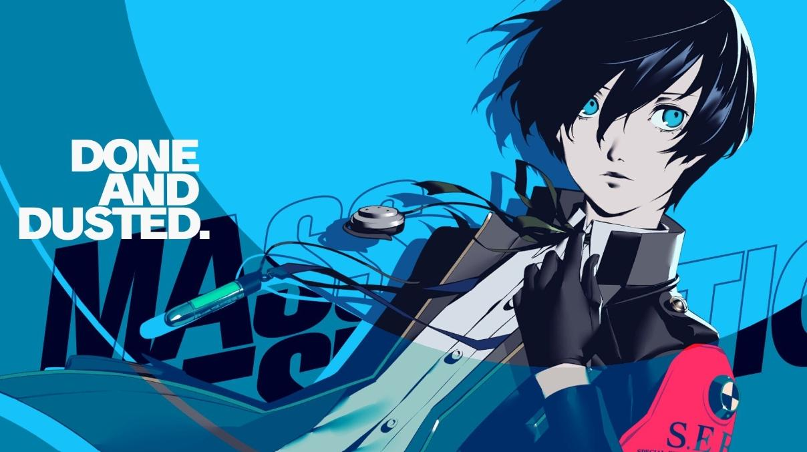

Analyseer het Dark Hour
Bereid je optimaal voor op Tartarus
Gebruik de navigatie om direct de statisteken van de Special Extracurricular Execution Squad (S.E.E.S.) te bestuderen of duik diep in de lore achter de schaduwen.
Welkom bij dit database-gestuurde platform over Persona 3 Reload. Als eerstejaars HBO Informatica-project is deze Wiki volledig gestructureerd om data over personages, verhalen en verborgen in-game mechanics snel inzichtelijk te maken.
Gebruik de navigatie om direct de statisteken van de Special Extracurricular Execution Squad (S.E.E.S.) te bestuderen of duik diep in de lore achter de schaduwen.

